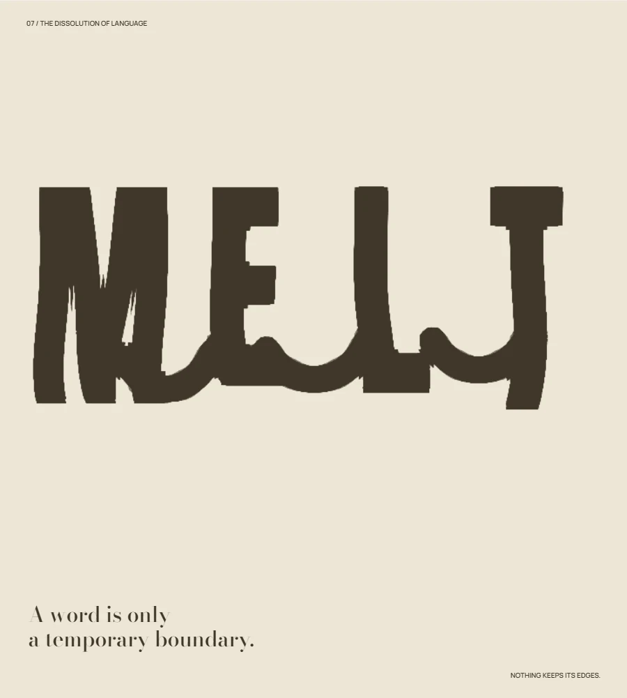
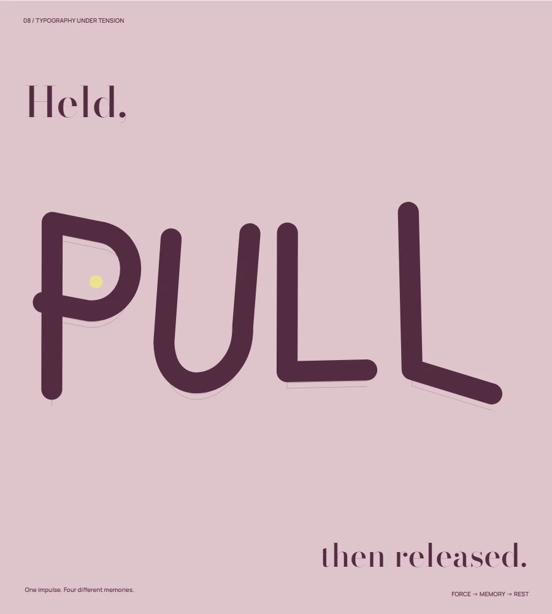
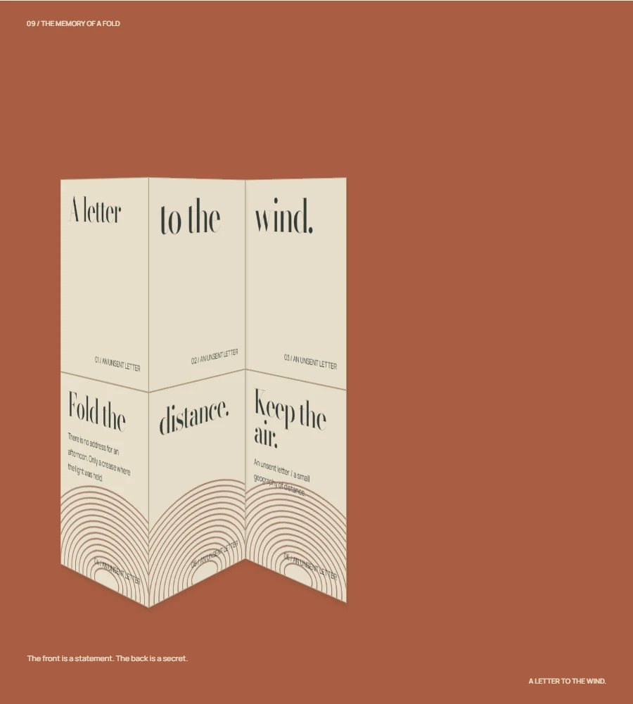
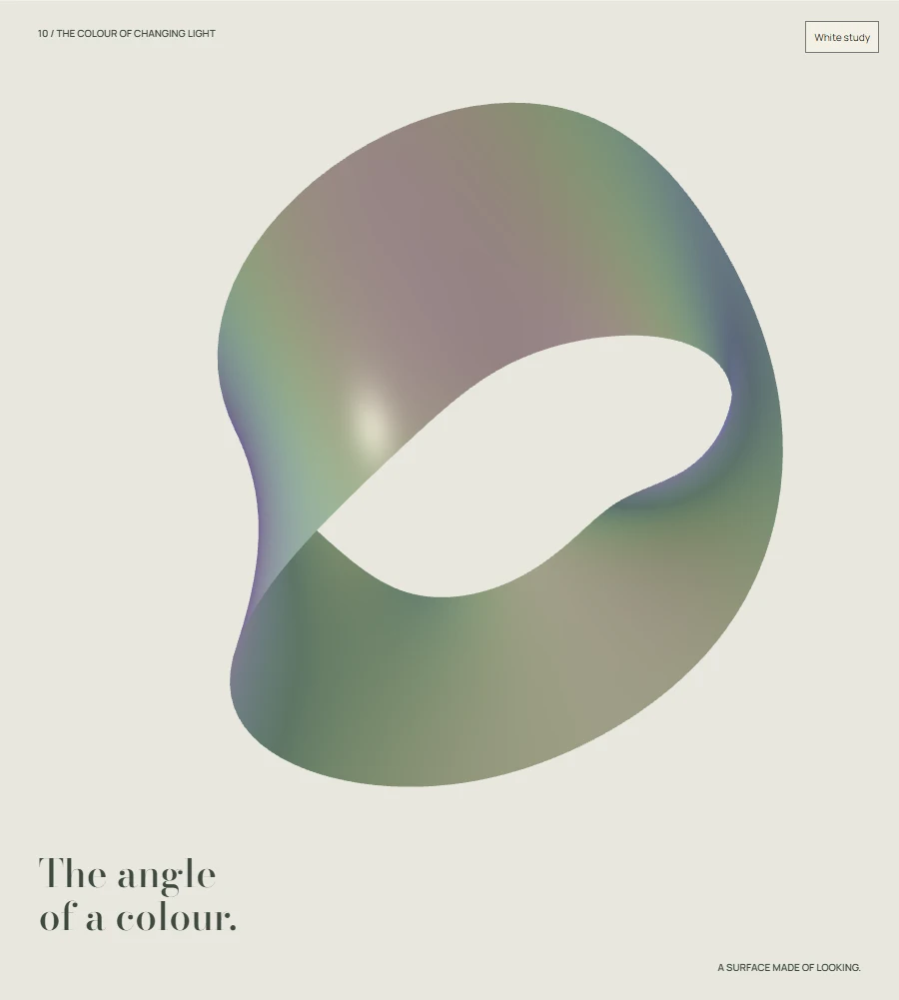
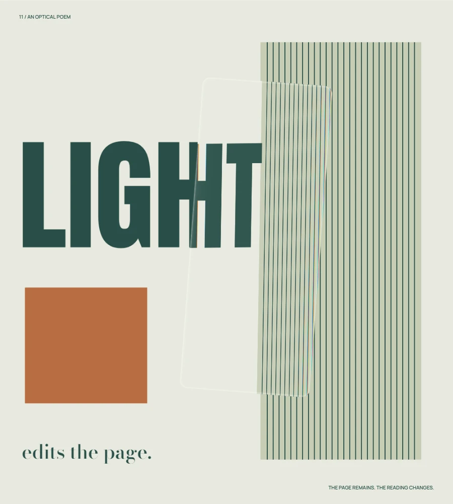
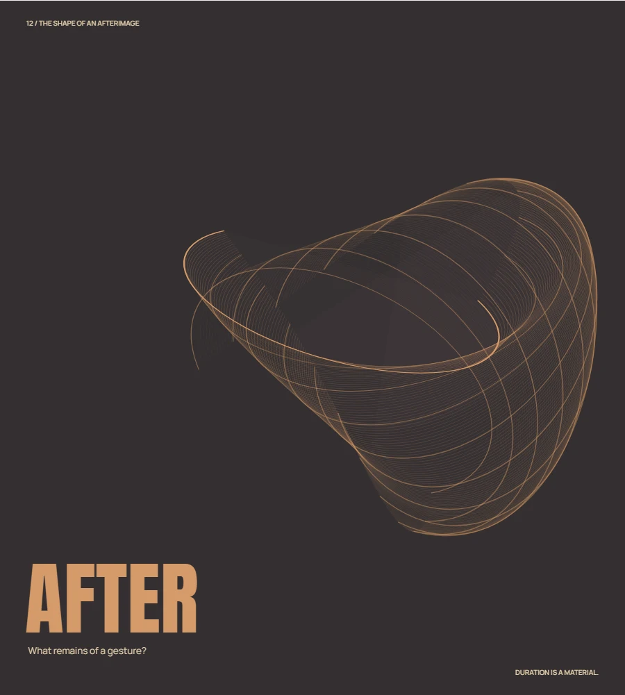

Nothing stays
the same.
Six studies of material intelligence. Language liquefies, paper remembers, and light redraws the surface of things.
材質不是裝飾，而是改變構圖的力量。六件關於流動、張力、摺痕、光學與時間的動態海報。
Explore 7—12 ↓The Materiality of MotionSix material propositions / 2026
7 / Liquid typography16″

Nothing keeps its edges
Language softens at its boundaries. Separate letters briefly become one continuous body, then settle into a different reading.Glyph deformation / WebGL density union
8 / Elastic letterforms14″

Held, then released
A word can store a gesture. A local pull travels through four connected letter bodies, and each region remembers it for a different length of time.Vector glyphs / damped elastic modes
9 / Paper engineering20″

A letter to the wind
An unsent letter has two readings: what the front declares, and what its folds keep out of sight.CSS 3D / six hinged printed planes
10 / Iridescent sculpture18″

The angle of a colour
Colour is an event between a surface and a viewer. A narrow twisted film makes that event visible without becoming a rainbow ornament.WebGL mesh / thin-film approximation
11 / Light through glass16″

Light edits the page
A transparent surface becomes an editor: it displaces a word, redraws a boundary and leaves the page intact.WebGL / refractive displacement
12 / Time as material20″

The shape of an afterimage
A single gesture is small. Its past, held beside its present, becomes a room.Canvas / deterministic temporal sampling